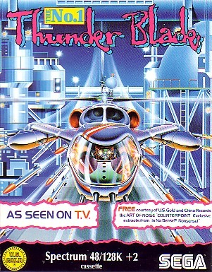
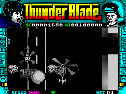

Thunder Blade


{kind=link}

| Publisher: | US Gold |
| Price: | £8.99 Cass, 12.99 Disk |
| Year: | 1988 |
| Source: | CRASH, Issue 59 |

Rotor-wing arcade action takes Spectrum by storm!
One of the year’s biggest arcade games has finally arrived on the Spectrum and thanks to some state-of-the-art programming it looks pretty darn good. The game takes place in a country where the government has been overthrown by rebels who plan to install an evil dictator. Fortunately the finest helicopter pilot alive, you, are still at liberty with the world’s most powerful fighting machine all fuelled up and ready to go. Codenamed the Gunship Gladiator you hesitate hardly a second before climbing aboard and setting off to restore Democracy...
The Thunder Blade is armed with machine guns and air-to-ground missiles, but has no defences other than a bit of armour plating and your skill at dodging bullets. These skills have to see you through four levels of mechanised mayhem. Each level — except the final one — is split into three sections; two overhead, vertically scrolling sections and one flying into the screen section. Overall there are 12 sections grouped into several multiloads (four on the 128K, eight on the 48K).

On Level One the Thunder Blade is flying through a city heavily populated with tanks, helicopters and jet aircraft. Dropping in height on the overhead section makes the skyscrapers and roads grow larger in an impressive display of 3-D programming. The joystick controls left/right direction and height, speed is either by keys or joystick — hold down fire and forward.
Once you have battled your way through the city you must face a large battleship kicking out flak and missiles in all directions. When this is sunk an end of level bonus is awarded, depending on the amount of hits scored. The second level moves the player to another potential paintwork-scraping encounter — rotoring through a network of caverns toward another ominous enemy. Level Three finds our intrepid hero flying over enemy held jungles and waterways, now coming under fire from heavily armed ships. The final baddie here is a huge aircraft.
By the fourth and final level the ravages of battle are starting to show on your battered and dented chopper, as well as your battered and bruised body, but tough mercenaries like you don’t give up, after all you don’t think Arnie Schwarzenegger would say ‘naff this for a game of soldiers, I’m off home’ (in his Austrian accent). No, he’d fight on, in search of the ultimate goal — an oil refinery which should make a satisfying bang before you take on the last battleship.
I think US Gold have done a great job here, converting such a great coin-op to the Spectrum. The 3-D perspectives are used to great effect, especially on the first level with the tall buildings soaring to their lofty heights, and you vainly tugging at the joystick trying to avoid them. Although the sprites are monochromatic, they are all well designed, and serve their functions with a single-minded determination — for the most part this means blowing the socks off of the brave chopper pilot. I greatly enjoy playing the arcade version, and although the hydraulic chair isn’t present on the computer version, the game is just as much fun. I think that US Gold are onto a big Christmas hit with Thunder Blade.
MARK ... 90%
- On the first section, keep weaving left and right, while firing like mad.
- On vertically-scrolling sections, use missiles to destroy the ground installations.
- Try to eliminate as many installations on the vertically-scrolling levels to earn a bigger bonus.
- On the 3-D overhead-view sections, keep high to fly over the buildings.
The only thing missing from Thunder Blade is the rudder and moving cockpit, everything else is here. The graphics are faithful to the arcade machine and full of detail, the 3-D perspective with trees, blocks of flats and tanks zooming past is excellent. These graphics give a feeling of realism that most shoot-’em-ups lack and even though there is an absence of colour, the targets are never cluttered by badly detailed backgrounds. There is a pretty drastic multiload system, so if you don’t have a tape counter then you could be in serious trouble! Thunder Blade is yet another excellent arcade conversion — a must for the arcade machine lovers and helicopter simulation freaks alike.
NICK ... 92%
At last it’s here! And I can finally see what all the fuss was about. The innovative graphics techniques used for the changing perspective are really impressive — I especially like the cityscape overhead view sections where a definite sense of vertigo is induced as you dive towards the ground. But Thunder Blade isn’t just impressive technically. In the playability stakes, it’s tremendously addictive, even though it’s limited mainly to simple blasting. Unfortunately there are the usual problems with the multiload which rudely interrupts play every so often. But despite this minor irritation, as a mixture of essentially two different shoot-’em-up styles, Thunder Blade represents very good value for money. It’s not just another dull shoot-’em-up, but a technically impressive conversion from the brilliant coin-op and has inherited the great playability and high-flying atmosphere of the original arcade machine. What a great Tiertex treat, just in time for Christmas!
PHIL ... 91%
THE ESSENTIALS
| Joysticks: | Kempston, Sinclair |
| Graphics: | Amazing 3-D perspective which changes as you climb and dive, giving a true sense of height |
| Sound: | Good music on 128 with lots of effective explosions on both 48 & 128 machines |
| General rating: | A superb conversion of the great coin-op — US Gold and Tiertex have definitely pulled off what others said couldn’t be done |
| Presentation: | 91% |
| Graphics: | 93% |
| Sound: | 79% |
| Playability: | 92% |
| Addictive qualities: | 90% |
| Overall: | 91% |